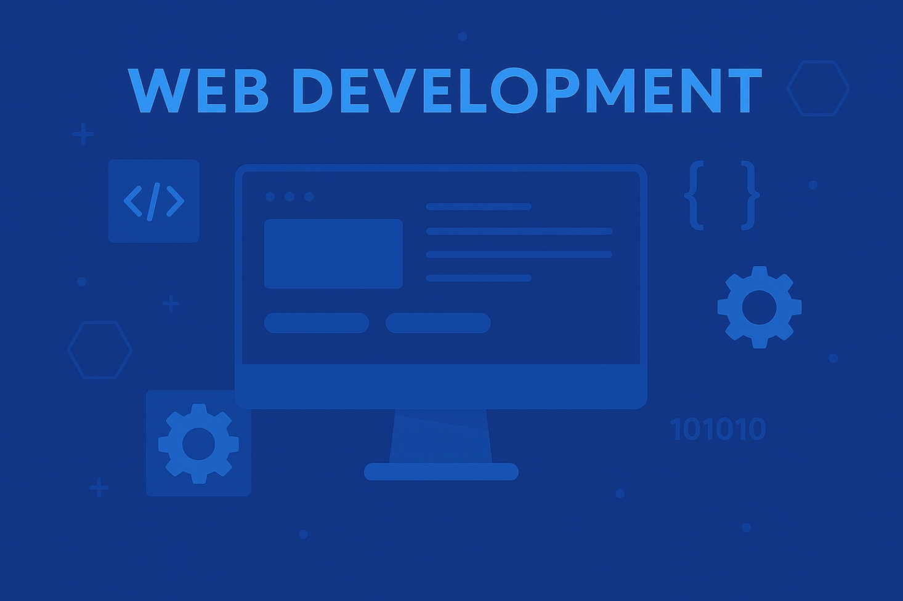

Pelajari cara membuat website modern, responsif, dan interaktif dari dasar hingga mahir.
Web Development adalah proses membangun dan memelihara situs web yang mencakup berbagai aspek, mulai dari struktur halaman menggunakan HTML, desain visual dengan CSS, hingga interaksi dinamis melalui JavaScript. Secara umum, web development terbagi menjadi dua bagian utama: front-end, yaitu tampilan antarmuka yang dilihat dan digunakan oleh pengguna, serta back-end, yaitu bagian yang mengelola proses di balik layar seperti server, database, dan logika aplikasi. Tujuan utama dari web development adalah menciptakan situs web yang menarik secara visual, berfungsi dengan baik, dan mudah diakses oleh semua pengguna. Di era digital saat ini, kemampuan dalam pengembangan web menjadi sangat penting, karena hampir seluruh informasi, layanan, dan komunikasi dapat diakses melalui internet. .
Pelajari cara membangun struktur dasar halaman web menggunakan berbagai tag dan elemen HTML secara tepat dan terstruktur. .
Pelajari cara memperindah tampilan halaman web melalui pengaturan warna, jenis huruf, animasi, dan tata letak yang responsif. .
Pelajari cara membangun interaktivitas dan dinamika pada halaman web menggunakan bahasa pemrograman JavaScript di sisi klien (client-side)..
<!DOCTYPE html>
<html lang="id">
<head>
<meta charset="UTF-8">
<title>Contoh Halaman</title>
</head>
<body>
<h1>Selamat Datang</h1>
<p>Ini contoh halaman web sederhana.</p>
</body>
</html><!DOCTYPE html>
<html lang="id">
<head>
<meta charset="UTF-8">
<title>Daftar Buah</title>
</head>
<body>
<h1>Daftar Buah</h1>
<ul>
<li>Apel</li>
<li>Pisang</li>
<li>Mangga</li>
</ul>
</body>
</html><!DOCTYPE html>
<html lang="id">
<head>
<meta charset="UTF-8">
<title>Form Kontak</title>
</head>
<body>
<h1>Form Kontak</h1>
<form>
<label for="nama">Nama:</label>
<input type="text" id="nama" name="nama"><br>
<label for="email">Email:</label>
<input type="email" id="email" name="email"><br>
<button type="submit">Kirim</button>
</form>
</body>
</html><!DOCTYPE html>
<html lang="id">
<head>
<meta charset="UTF-8">
<title>Data Siswa</title>
</head>
<body>
<h1>Data Siswa</h1>
<table border="1">
<tr><th>Nama</th><th>Umur</th></tr>
<tr><td>Budi</td><td>15</td></tr>
<tr><td>Siti</td><td>16</td></tr>
</table>
</body>
</html>